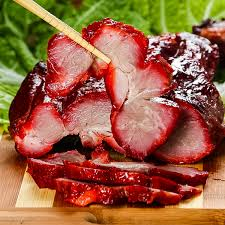

Char Siu Pork

Quick and simple, this recipe brings home the goodness of restaurant-quality char siu with minimal fuss.
Ingredients
- 1/4 cup light brown sugar, firmly packed
- 1/4 cup soy sauce
- 1/2 tsp. Chinese five-spice powder
- 2 tsp. toasted sesame oil
- 1 tbsp. grated fresh ginger
- 1 glove garlic, finely chopped
- 1 1/2 lbs. pork tenderloin
- Non-stick cooking spray
- Coarse kosher salt and freshly-ground black pepper
- 2 tbsp. ketchup
- 2 tbsp. honey
Instructions
- In a medium bowl, combine the brown sugar, soy sauce, five-spice powder, sesame oil, ginger, and garlic. Place the pork in a large resealable plastic bag and pour the marinade over. Press out as much air as possible and seal the bag. Refrigerate for at least 30 minutes or up to 4 hours, flipping the bag occasionally to evenly coat the pork.
- Adjust the oven rack to the middle position and heat the oven to 350°F (175°C). Line a rimmed baking sheet with aluminum foil and set a wire rack on the sheet. Spray the rack with nonstick spray.
- Remove the pork from the marinade, letting any excess drip off, and place it on the wire rack. Season on all sides with salt and pepper. Roast until the internal temperature of the pork registers 135°F (57°C), 25 to 40 minutes, depending on the size of the tenderloin.
- While the pork is roasting, transfer the marinade to a small saucepan and stir in the ketchup and honey. Bring to a boil over medium heat and then reduce the heat to maintain a simmer. (It's important to boil the marinade to kill any possible bacteria from the raw pork.)
- Remove the baking sheet from the oven and turn the oven to broil. Adjust the oven racks so that the top rack sits 3 to 4 inches (8 to 10 cm) from the broiler. Brush the pork with half the warm glaze; broil the pork until a deep mahogany color, 2 to 3 minutes. Using tongs, flip the meat over, baste with the remaining glaze and broil until the other side caramelizes, 2 to 3 minutes more. Cover loosely with aluminum foil and let rest for 5 to 7 minutes to allow the juices to redistribute. Slice thinly and serve immediately.